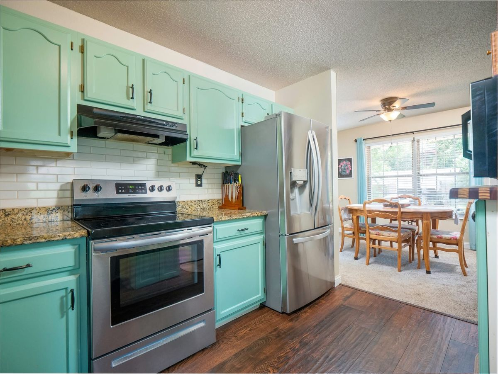
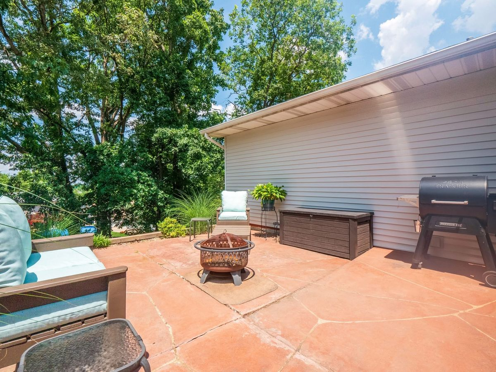

Last updated October 22, 2026
5021 Galena Court drew 27 showings and four offers in two days. My sellers, longtime friends of mine, chose the best one on paper, the appraisal came in low while they were on vacation, and the contract held. Step into my seat, make the calls, then read how each one played out.
Should you list below the comps to get multiple offers?
When recent sales show buyers are competing, yes. The comparable sales suggested $250,000 to $265,000, and we listed at $250,000, the bottom of the range.
The comps weren’t the only evidence. I found three comparable homes that had listed below that range, a few at $250,000 and one at $240,000, and every one of them sold for more than its list price. That told me buyers in this price range were competing, and that the market, not the list price, would set the number.
Your turn: price at the top of the comps, or at the bottom and let the buyers set the number? — We listed at $250,000.
What 2026 sales show about the first few days →
Does posting a listing on Facebook bring in buyers?
It widens the reach when the price is right. I posted this listing on my Facebook page, and that one post reached 2,149 views with 294 engagements. Most of those views came from people who don’t follow me, and they ran in line with the views on Zillow.
The listing also went out on the MLS and the big home-search sites, where buyers were already watching. A well-priced listing travels on its own: the price at the bottom of the comps is what made people stop scrolling. The house had 27 showings in two days.

Two offers $1,000 apart: which one should a seller take?
The one with less risk, and you can use one offer to improve the other. The 27 showings brought four offers: one lowball investor offer and two nearly identical conventional offers, $1,000 apart. The lower of those two had come in first.
The higher offer, with 20% down and an escalation clause, came with an appraisal rider and the right to send an inspection notice asking for repairs. The first offer was virtually the same.
So I went back to the higher buyer’s agent. We were getting ready to accept virtually the same offer, their escalation only made theirs $1,000 better, and the other buyers were here first. They removed the appraisal rider and the inspection notice.
That made it the best offer on paper: it netted my sellers more and carried less risk. It had one gap. We accepted it before the buyer’s pre-approval letter came in, and I told my sellers that was the risk when we reviewed it.
Your turn: take the higher offer as written, take the first one, or go back to the higher buyer? — I went back to the higher buyer, and the terms got better without the price changing.
How I use one offer to get a better one →
Can a buyer renegotiate after a low appraisal without an appraisal rider?
No. In the St. Louis contract, appraisal protection comes from an appraisal rider, and without one a low appraisal gives the buyer no right to ask for a lower price. The appraisal came in at $265,000, $6,000 under the $271,000 contract, and the buyer’s agent sent it to me with an amendment asking for a reduction anyway.
I asked her why she was sending it. The contract didn’t give her buyer that option. Before going any deeper into the appraisal, I asked whether her client planned to terminate and forfeit the earnest money. In a negotiation, setting the anchor is leverage.
My sellers were longtime friends of mine, and they were on vacation. I wanted a solution in hand before I called them with an update.
Your turn: lower the price to the appraisal, split the difference, or point to the contract? — I pointed to the contract. The same day, the agent agreed her buyer couldn’t ask for a reduction.
What a low appraisal costs and who can do what →
What happens when the contract says conventional but the loan is FHA?
The appraisal follows FHA rules, so it checks condition as well as value. This offer was written with conventional financing, but the lender had run the loan as FHA.
That’s how the appraisal came back with repair conditions: a trip hazard outside any walking path and an unattached downspout. Minor items, and in my view an overreach, but the loan needed them done.
Can unverified pending sales pull down an appraisal?
They can. The appraiser used pending sales without contacting the agents to confirm the prices, and one was closing $30,000 higher than the appraisal stated. I reviewed the appraisal, found three problems and challenged every one in writing:
- No credit for the additional parking.
- Pending sales nobody verified, including the one closing $30,000 higher.
- A year-old sale. The appraiser said finding a true substitute would take a full appraisal. I agreed, because nothing like this house was on the market. The principle of substitution is about what a buyer could buy instead today, not a year ago.
Plan as if the number will stand. He didn’t change the value or the condition items. In my experience, even when an appraiser doesn’t follow USPAP, the appraisal standards, there’s virtually no recourse. A new appraisal is ordered by the lender, not the agents.

How did the buyer close with a $6,000 appraisal gap?
With cash. The buyers covered the $6,000 between the $265,000 appraisal and the $271,000 contract price, their son made the repairs the loan required, and the sale closed at the contract price.
What should sellers and buyers learn from a low appraisal?
Sellers: the terms you accept decide what happens when something goes wrong later. Buyers: every protection you give up to win is one you won’t have when you need it.
Why would a buyer drop an appraisal rider?
To win a nearly tied offer. It worked here, but it also meant the buyer paid the $6,000 gap when the appraisal came in low. Give up appraisal protection only with the cash to cover a gap. Which contingencies to keep →
Should a seller accept an offer without a pre-approval letter?
Only knowing the risk. My sellers did, with that risk explained, and the financing turned out to be FHA rather than conventional. Ask for the letter, and the loan type, before you sign.
Uniform Standards of Professional Appraisal Practice (USPAP), The Appraisal Foundation
More in this series: Lessons From a Sale · Pricing a split-level in Lindbergh · Right-sizing to Fenton

Grew up in South St. Louis, lived in Dogtown for 6 years, now in South County. You’ll find us at Wellspring on Lindbergh on Sundays. I'm not selling you a house — I'm showing you how to think about buying or selling a house.